Personal Field Marks / All-Page Rollout
Source symbols above. Browser-rendered route families below. Every human-facing page receives one semantic mark and one restrained visual artifact.
Generated source language
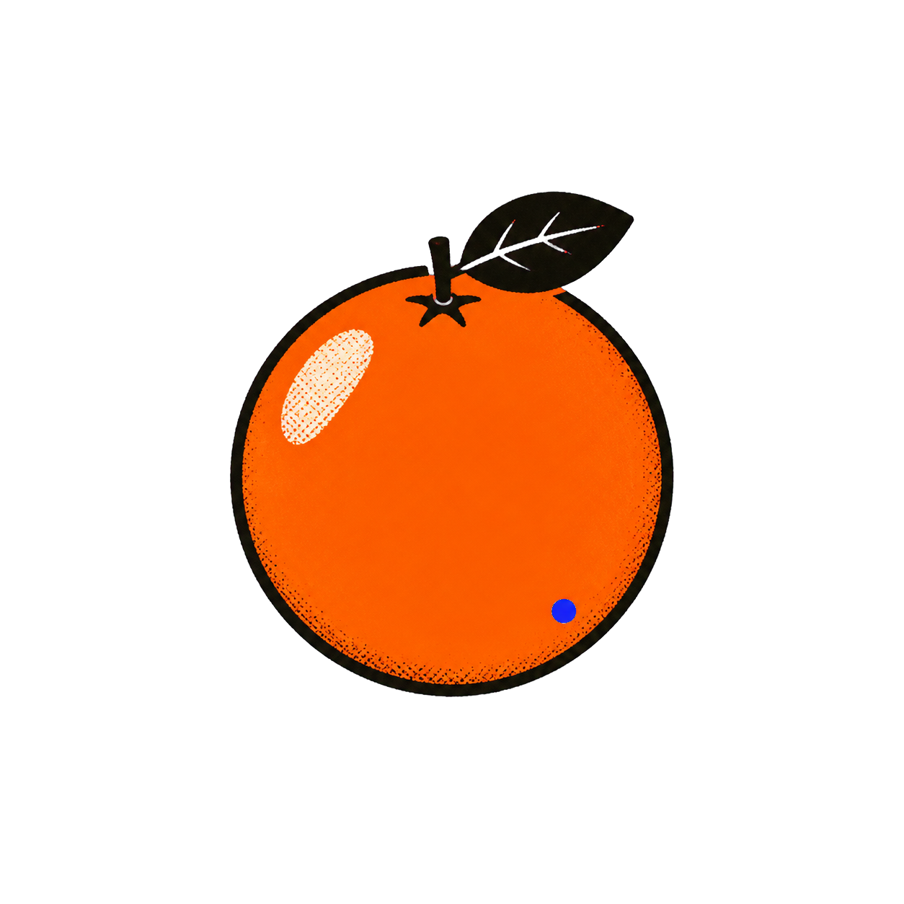
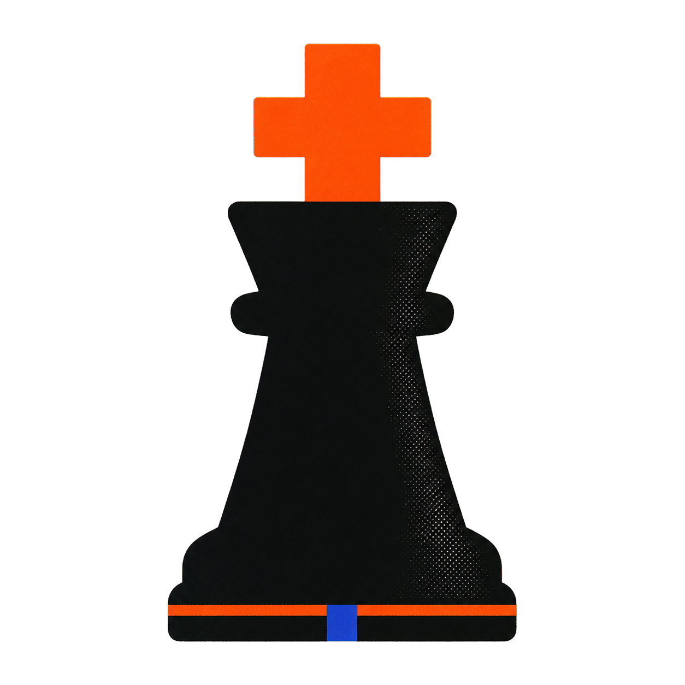
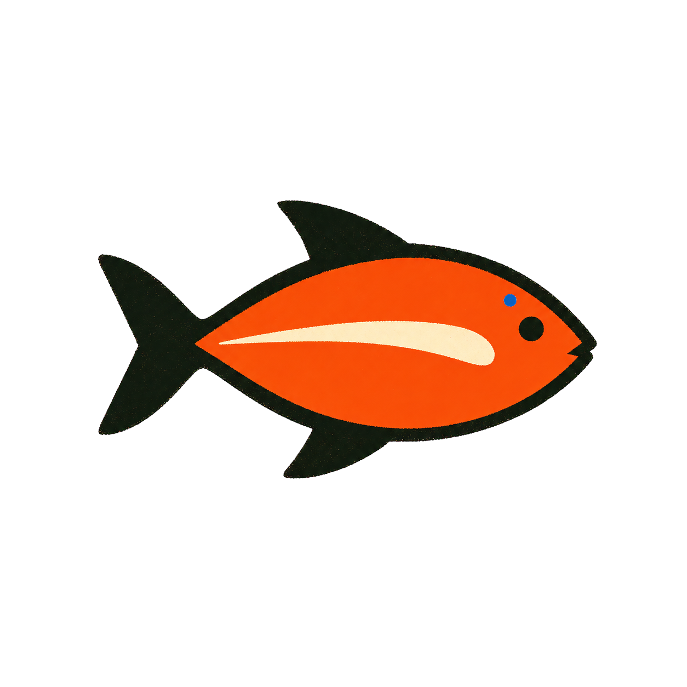
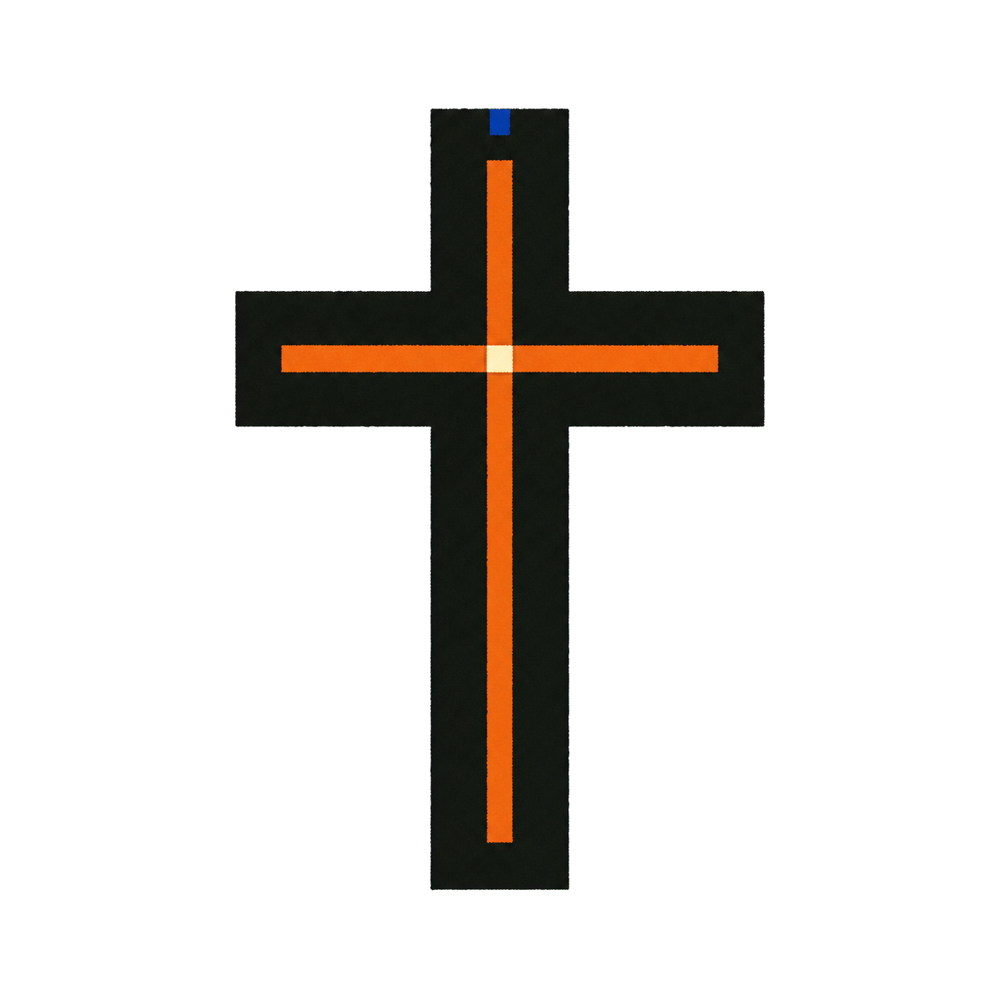
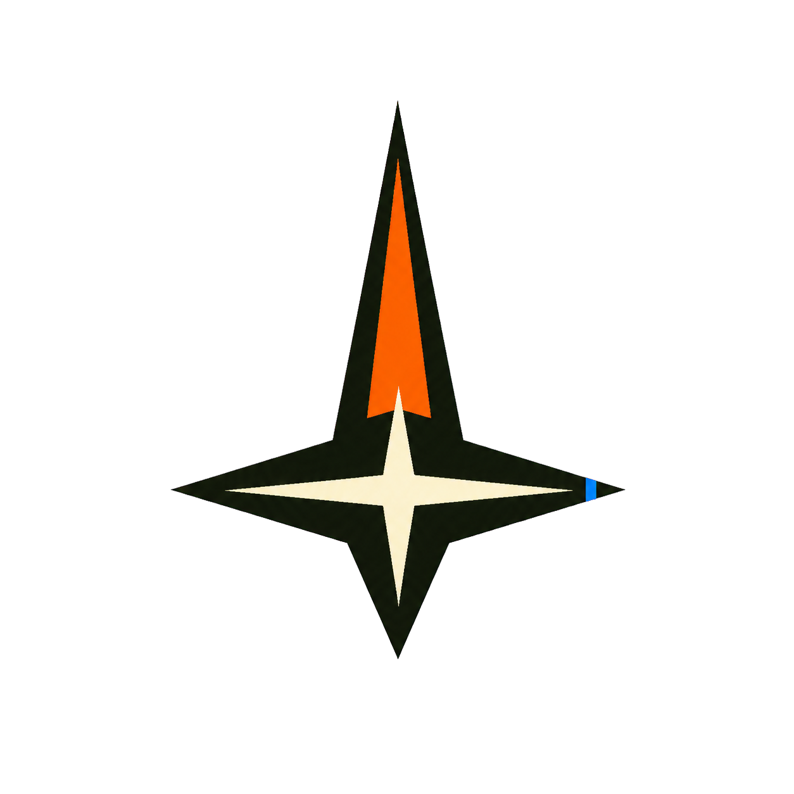
Browser-rendered route coverage
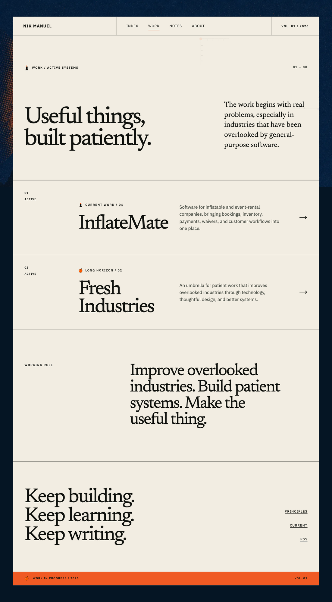
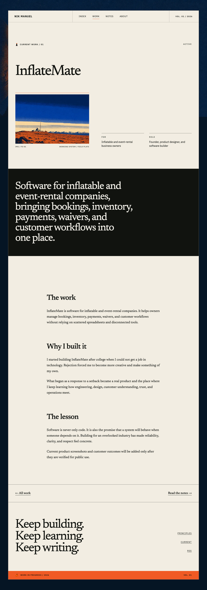
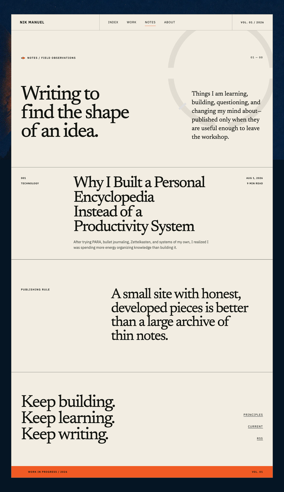
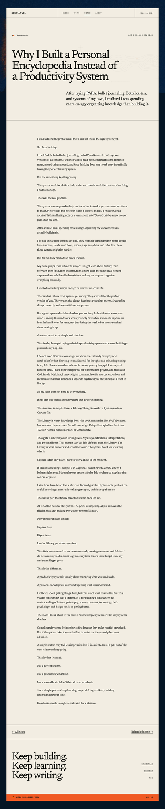
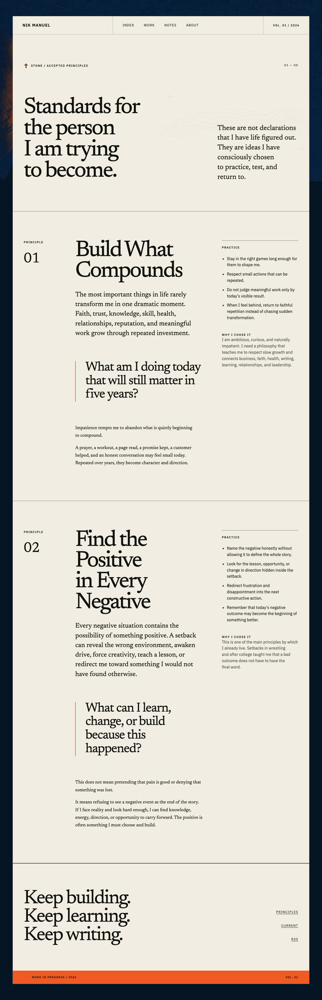
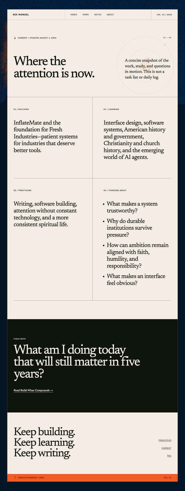
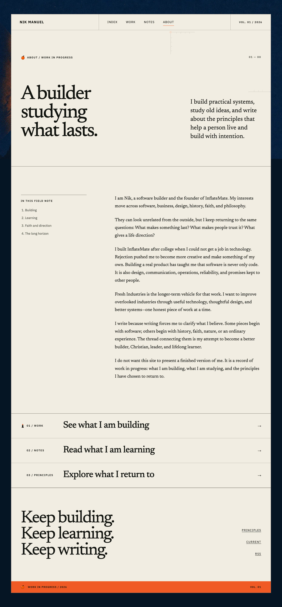
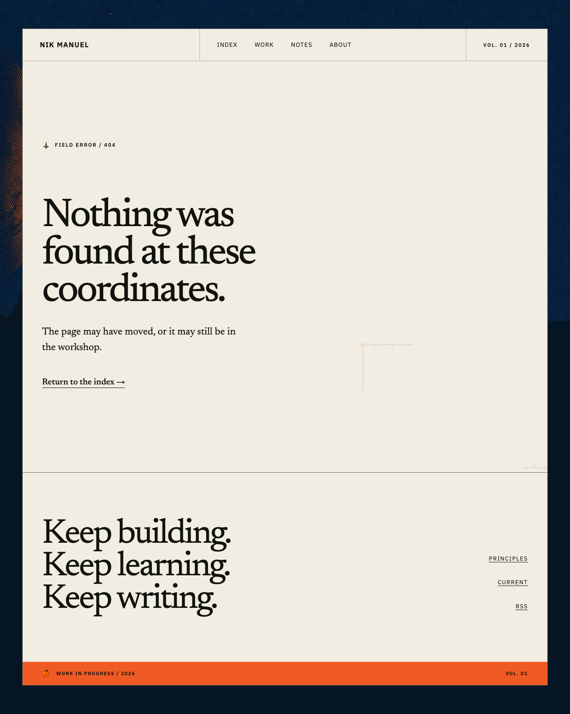